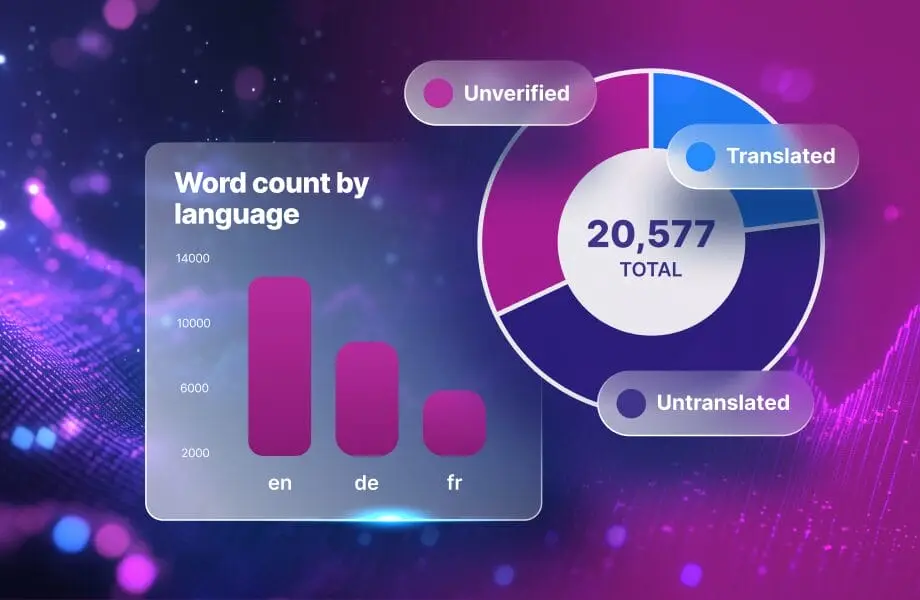

定义
B2B 页面混着日历、时区和数字习惯。稳妥的做法是用文字写出日期，或使用年-月-日顺序，并在小时重要时写明时区。翻译不应调换字段的含义。修订日期是证据的一部分，用来说明句子描述的是哪一版规格。两种语言给同一修订显示两个日期，事实就被拆开了。
短答
日期和时间的本地化，是指报价、证书、修订或交期在每种语言里都指向同一个时刻。一个既能读成 3 月 4 日、又能读成 4 月 3 日的数字日期，还不是事实。

哪些字段必须说同一件事
在报价和证书上，对齐公司名、文件编号和生效日期。在产品页上，交期是条件，不是口号。如果本地化的是日期的写法，就要保住同一个公历日。不要把截止日期本地化成另一个星期。
页面上的问题
如果日期只出现在图片里，读者就只能猜。把日期放进 HTML 正文，紧挨着它所限定的说法。指向证书的内部链接应该使用文件名，目标应返回该文件，而不是一个软错误。
随页面一起走的信号
hreflang 不解释日期。它只关联语言 URL。SEO 健康可以记下获取问题。GEO 健康可以记下两种语言对修订生效日不一致。两条都不是排名。
日期是证据的一部分，说明页面上是哪一版事实。 Mika Visibility 要求每种已发布的语言保留同一套公司名、产品名、规格和应用，同时允许该市场的问题有真正的深度。英语在站点根目录，中文在 /zh/，不要增加 /en/ 前缀。hreflang 使用 en、zh-Hans，以及指向英文 URL 的 x-default。健康分数不会自动变成增长分数。
要检查什么
- 在两种语言里读同一份证书日期，确认是同一个公历日。
- 写出月份，或使用年-月-日。
- 把日期放在 HTML 正文里，紧挨它所限定的修订。
- 不要把 hreflang 当成日期解析器。
它不声称什么
日期写清楚，不保证搜索排名或 AI 引用。Mika 不承诺回答产品会偏好某一种日历格式。
一个结构示例
这是教学示例，不是客户指标。英文证书把校准日写成 2026-04-03。另一种语言印了 03/04/2026，没有月份名称。有的读者会把它当成三月。修复是两种正文都写成 2026年4月3日或 2026-04-03，然后复审。不声称任何体量或奖项。
常见问题
日期本地化应把什么保持为同一个时刻？
日期和时间的本地化，是指报价、证书、修订或交期在每种语言里都指向同一个时刻。一个既能读成 3 月 4 日、又能读成 4 月 3 日的数字日期，还不是事实。
为什么数字日期会在 B2B 页面上失败？
B2B 页面混着日历、时区和数字习惯。稳妥的做法是用文字写出日期，或使用年-月-日顺序，并在小时重要时写明时区。翻译不应调换字段的含义。修订日期是证据的一部分，用来说明句子描述的是哪一版规格。两种语言给同一修订显示两个日期，事实就被拆开了。
日期清楚就能保证被引用吗？
日期写清楚，不保证搜索排名或 AI 引用。Mika 不承诺回答产品会偏好某一种日历格式。
下一步
做一次结构化的 SEO 与 GEO 审计，看健康发现、增长缺口，以及可以执行的蓝图。
更清楚的实体、回答、证据和上下文，让页面更容易被理解和转述。任何回答产品中的结果都不保证。